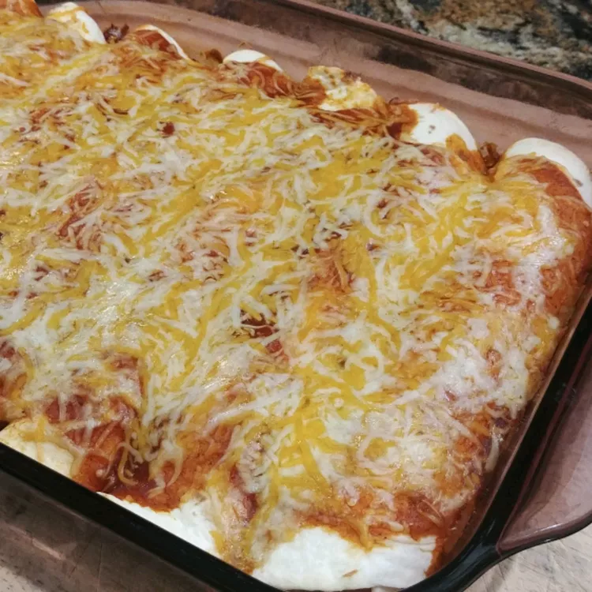

Easy Creamy Chicken Enchiladas

These creamy chicken enchiladas are sure to become a new family favorite!
This recipe is so simple to put together and also perfect for using leftover
chicken.
Ingredients
- * 1 (10 ounce) can Old El Paso Red Enchilada Sauce
- 2 ½ cups shredded deli rotisserie chicken
- 1 ½ cups shredded Cheddar cheese
'
- 1 (8 ounce) package cream cheese, cut into 1/2-inch cubes
- 1 (1 ounce) package fajita seasoning mix*
- 10 Old El Paso® flour tortillas for soft tacos & fajitas (6 inch)
Directions
- Preheat the oven to 375 degrees F (190 degrees C).
Spray a 13x9-inch baking dish with cooking spray.
Spread 1/4 cup of enchilada sauce in the bottom of the baking dish.
- Mix chicken, 1 cup of Cheddar cheese, cream cheese, and seasoning
mix in a medium bowl; spoon slightly less than 1/2 cup of filling
onto each tortilla. Roll up each tortilla tightly; place seam-side
down in the prepared baking dish. Drizzle with remaining enchilada
sauce. Sprinkle remaining 1/2 cup Cheddar cheese on top; cover with foil.
- Bake in the preheated oven for 15 minutes; uncover
and bake 15 minutes longer or until bubbly and lightly browned.